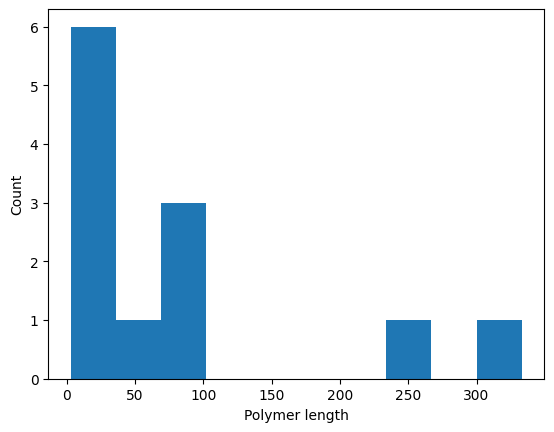

Linear polymerization#
This example demonstrates a simple polymerization process in which monomers M can bind each other to form linear chains. There’s a lower rate of depolymerization, and chains can be terminated by capping agents C.
[2]:
from kappybara.system import System
system = System.from_ka(
"""
%init: 1000 M(l[.], r[.])
%obs: 'Free monomer' |M(l[.], r[.])|
M(r[.]), M(l[.]) -> M(r[1]), M(l[1]) @ 1 // Polymerization
M(r[1]), M(l[1]) -> M(r[.]), M(l[.]) @ 0.1 // Depolymerization
// Chain capping
M(r[.]), C(m[.]) -> M(r[1]), C(m[1]) @ 0.05
M(l[.]), C(m[.]) -> M(l[1]), C(m[1]) @ 0.05
// Cap removal
M(r[1]), C(m[1]) -> M(r[.]), C(m[.]) @ 0.01
M(l[1]), C(m[1]) -> M(l[.]), C(m[.]) @ 0.01
"""
)
Simulate for a bit:
[3]:
while system.time < 100:
system.update()
---------------------------------------------------------------------------
KeyError Traceback (most recent call last)
Cell In[3], line 2
1 while system.time < 100:
----> 2 system.update()
File /opt/hostedtoolcache/Python/3.12.11/x64/lib/python3.12/site-packages/kappybara/system.py:475, in System.update(self)
473 def update(self) -> None:
474 """Perform one simulation step."""
--> 475 self.wait()
476 if (rule := self.choose_rule()) is not None:
477 self.apply_rule(rule)
File /opt/hostedtoolcache/Python/3.12.11/x64/lib/python3.12/site-packages/kappybara/system.py:439, in System.wait(self)
433 """Advance simulation time according to exponential distribution.
434
435 Raises:
436 RuntimeWarning: If system has no reactivity (infinite wait time).
437 """
438 try:
--> 439 self.time += random.expovariate(self.reactivity)
440 except ZeroDivisionError:
441 warnings.warn(
442 "system has no reactivity: infinite wait time", RuntimeWarning
443 )
File /opt/hostedtoolcache/Python/3.12.11/x64/lib/python3.12/site-packages/kappybara/system.py:430, in System.reactivity(self)
423 @property
424 def reactivity(self) -> float:
425 """The total reactivity of the system.
426
427 Returns:
428 Sum of all rule reactivities.
429 """
--> 430 return sum(self.rule_reactivities)
File /opt/hostedtoolcache/Python/3.12.11/x64/lib/python3.12/functools.py:998, in cached_property.__get__(self, instance, owner)
996 val = cache.get(self.attrname, _NOT_FOUND)
997 if val is _NOT_FOUND:
--> 998 val = self.func(instance)
999 try:
1000 cache[self.attrname] = val
File /opt/hostedtoolcache/Python/3.12.11/x64/lib/python3.12/site-packages/kappybara/system.py:421, in System.rule_reactivities(self)
414 @cached_property
415 def rule_reactivities(self) -> list[float]:
416 """The reactivity of each rule in the system.
417
418 Returns:
419 List of reactivities corresponding to system rules.
420 """
--> 421 return [rule.reactivity(self) for rule in self.rules.values()]
File /opt/hostedtoolcache/Python/3.12.11/x64/lib/python3.12/site-packages/kappybara/rule.py:186, in KappaRule.reactivity(self, system)
175 def reactivity(self, system: "System") -> float:
176 """Calculate the total reactivity of this rule in the given system.
177
178 Args:
(...) 183 for rule symmetry.
184 """
185 return (
--> 186 self.n_embeddings(system.mixture) // self.n_symmetries * self.rate(system)
187 )
File /opt/hostedtoolcache/Python/3.12.11/x64/lib/python3.12/functools.py:998, in cached_property.__get__(self, instance, owner)
996 val = cache.get(self.attrname, _NOT_FOUND)
997 if val is _NOT_FOUND:
--> 998 val = self.func(instance)
999 try:
1000 cache[self.attrname] = val
File /opt/hostedtoolcache/Python/3.12.11/x64/lib/python3.12/site-packages/kappybara/rule.py:222, in KappaRule.n_symmetries(self)
219 r.interface["__temp__"] = r_site
221 pattern = Pattern(left_agents + right_agents)
--> 222 return pattern.n_isomorphisms(pattern)
File /opt/hostedtoolcache/Python/3.12.11/x64/lib/python3.12/site-packages/kappybara/pattern.py:723, in Pattern.n_isomorphisms(self, other)
721 temp = 1
722 for l, r in zip(self.components, perm):
--> 723 temp *= len(list(l.isomorphisms(r)))
724 res += temp
725 return res
File /opt/hostedtoolcache/Python/3.12.11/x64/lib/python3.12/site-packages/kappybara/pattern.py:520, in Component.isomorphisms(self, other)
518 if len(self.agents) != len(other.agents):
519 return
--> 520 yield from self.embeddings(other, exact=True)
File /opt/hostedtoolcache/Python/3.12.11/x64/lib/python3.12/site-packages/kappybara/pattern.py:469, in Component.embeddings(self, other, exact)
466 b = agent_map[a]
468 match_func = a.isomorphic if exact else a.embeds_in
--> 469 if not match_func(b):
470 root_failed = True
471 break
File /opt/hostedtoolcache/Python/3.12.11/x64/lib/python3.12/site-packages/kappybara/pattern.py:309, in Agent.isomorphic(self, other)
307 if site_name not in other.interface and not a_site.undetermined:
308 return False
--> 309 b_sites_leftover.remove(site_name)
310 if a_site.state != other[site_name].state:
311 return False
KeyError: 'r'
[4]:
import matplotlib.pyplot as plt
def polymer_len_plot(system):
plt.hist([len(component) for component in system.mixture if len(component) > 1])
plt.xlabel("Polymer length")
plt.ylabel("Count");
print(f"Free monomers: {system['Free monomer']}")
polymer_len_plot(system)
Free monomers: 1000

Now let’s add some of the capping agent:
[5]:
system.mixture.instantiate("C(m[.])", 500)
while system.time < 200:
system.update()
print(f"Free monomers: {system['Free monomer']}")
polymer_len_plot(system)
---------------------------------------------------------------------------
KeyError Traceback (most recent call last)
Cell In[5], line 4
1 system.mixture.instantiate("C(m[.])", 500)
3 while system.time < 200:
----> 4 system.update()
6 print(f"Free monomers: {system['Free monomer']}")
7 polymer_len_plot(system)
File /opt/hostedtoolcache/Python/3.12.11/x64/lib/python3.12/site-packages/kappybara/system.py:475, in System.update(self)
473 def update(self) -> None:
474 """Perform one simulation step."""
--> 475 self.wait()
476 if (rule := self.choose_rule()) is not None:
477 self.apply_rule(rule)
File /opt/hostedtoolcache/Python/3.12.11/x64/lib/python3.12/site-packages/kappybara/system.py:439, in System.wait(self)
433 """Advance simulation time according to exponential distribution.
434
435 Raises:
436 RuntimeWarning: If system has no reactivity (infinite wait time).
437 """
438 try:
--> 439 self.time += random.expovariate(self.reactivity)
440 except ZeroDivisionError:
441 warnings.warn(
442 "system has no reactivity: infinite wait time", RuntimeWarning
443 )
File /opt/hostedtoolcache/Python/3.12.11/x64/lib/python3.12/site-packages/kappybara/system.py:430, in System.reactivity(self)
423 @property
424 def reactivity(self) -> float:
425 """The total reactivity of the system.
426
427 Returns:
428 Sum of all rule reactivities.
429 """
--> 430 return sum(self.rule_reactivities)
File /opt/hostedtoolcache/Python/3.12.11/x64/lib/python3.12/functools.py:998, in cached_property.__get__(self, instance, owner)
996 val = cache.get(self.attrname, _NOT_FOUND)
997 if val is _NOT_FOUND:
--> 998 val = self.func(instance)
999 try:
1000 cache[self.attrname] = val
File /opt/hostedtoolcache/Python/3.12.11/x64/lib/python3.12/site-packages/kappybara/system.py:421, in System.rule_reactivities(self)
414 @cached_property
415 def rule_reactivities(self) -> list[float]:
416 """The reactivity of each rule in the system.
417
418 Returns:
419 List of reactivities corresponding to system rules.
420 """
--> 421 return [rule.reactivity(self) for rule in self.rules.values()]
File /opt/hostedtoolcache/Python/3.12.11/x64/lib/python3.12/site-packages/kappybara/rule.py:186, in KappaRule.reactivity(self, system)
175 def reactivity(self, system: "System") -> float:
176 """Calculate the total reactivity of this rule in the given system.
177
178 Args:
(...) 183 for rule symmetry.
184 """
185 return (
--> 186 self.n_embeddings(system.mixture) // self.n_symmetries * self.rate(system)
187 )
File /opt/hostedtoolcache/Python/3.12.11/x64/lib/python3.12/functools.py:998, in cached_property.__get__(self, instance, owner)
996 val = cache.get(self.attrname, _NOT_FOUND)
997 if val is _NOT_FOUND:
--> 998 val = self.func(instance)
999 try:
1000 cache[self.attrname] = val
File /opt/hostedtoolcache/Python/3.12.11/x64/lib/python3.12/site-packages/kappybara/rule.py:222, in KappaRule.n_symmetries(self)
219 r.interface["__temp__"] = r_site
221 pattern = Pattern(left_agents + right_agents)
--> 222 return pattern.n_isomorphisms(pattern)
File /opt/hostedtoolcache/Python/3.12.11/x64/lib/python3.12/site-packages/kappybara/pattern.py:723, in Pattern.n_isomorphisms(self, other)
721 temp = 1
722 for l, r in zip(self.components, perm):
--> 723 temp *= len(list(l.isomorphisms(r)))
724 res += temp
725 return res
File /opt/hostedtoolcache/Python/3.12.11/x64/lib/python3.12/site-packages/kappybara/pattern.py:520, in Component.isomorphisms(self, other)
518 if len(self.agents) != len(other.agents):
519 return
--> 520 yield from self.embeddings(other, exact=True)
File /opt/hostedtoolcache/Python/3.12.11/x64/lib/python3.12/site-packages/kappybara/pattern.py:469, in Component.embeddings(self, other, exact)
466 b = agent_map[a]
468 match_func = a.isomorphic if exact else a.embeds_in
--> 469 if not match_func(b):
470 root_failed = True
471 break
File /opt/hostedtoolcache/Python/3.12.11/x64/lib/python3.12/site-packages/kappybara/pattern.py:309, in Agent.isomorphic(self, other)
307 if site_name not in other.interface and not a_site.undetermined:
308 return False
--> 309 b_sites_leftover.remove(site_name)
310 if a_site.state != other[site_name].state:
311 return False
KeyError: 'r'